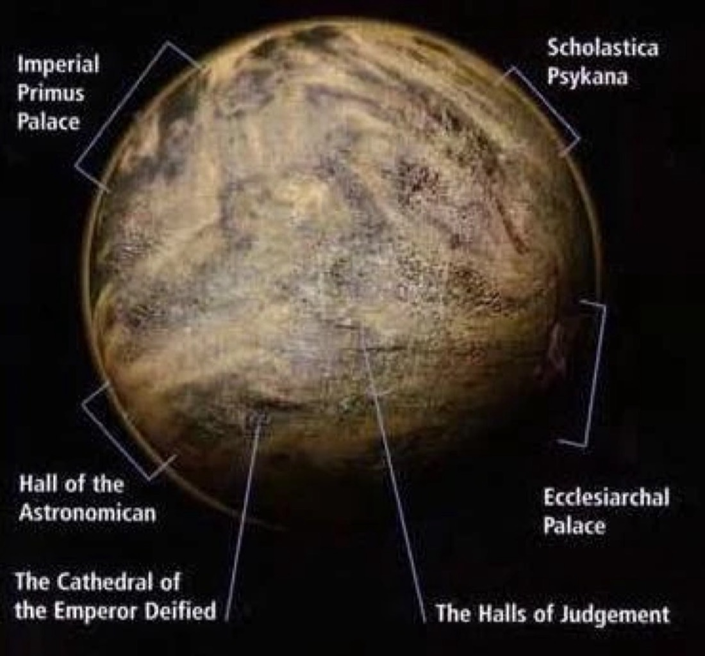

Terra
| Terra | |
|---|---|
| Holy Terra, Throneworld of the Imperium | |
 Imperial vessels over Terra, from a pict-capture of the orbital approaches | |
| System | Sol System, third planet |
| Segmentum | Segmentum Solar |
| Moon | Luna |
| Classification | Throneworld, Shrine world, Hive world |
| Capital | Imperial Palace |
| Population | Many tens of billions (unrecorded) |
| Ruler | Emperor of Mankind; governed by the High Lords of Terra |
| Notable features | Sanctum Imperialis, the Golden Throne, the Hall of the Astronomican, the Scholastica Psykana |
Terra, also called Holy Terra and in older records Earth, is the world on which humanity arose and the capital of the Imperium of Mankind. It is the third planet of the Sol System, in the heart of the Segmentum Solar, and the seat of the Emperor of Mankind on the Golden Throne. Every Imperial world owes it tithe and allegiance, and every Imperial citizen is taught that it is the holiest of all places.[1]
The planet has been inhabited without interruption since the earliest days of the species. It was the site of the Emperor's rise, the Unification Wars, the building of the Imperial Palace and the opening of the Great Crusade. During the Horus Heresy it was besieged by the traitor Legions in the Siege of Terra, the war's final and greatest battle.[2]
History
[edit]Before the Imperium
[edit]The earliest history of Terra is almost entirely lost. Imperial scholars hold that humanity arose on the planet in the deep past, and that it was home to a succession of civilisations, many of which were destroyed by their own weapons. Warp-faring humanity reached the stars in the age of the Dark Age of Technology, and Terra became the heart of a great human empire. That empire collapsed in the Age of Strife, when warp storms isolated the planet for some five thousand years and left it to techno-barbarian warlords.[2]
Unification
[edit]In the last centuries of the 30th millennium the Emperor began the Unification Wars, bringing the warring powers of Terra under his rule. When the wars ended, the planet was at peace for the first time since the Age of Strife. The Emperor concluded the Treaty of Olympus with the Mechanicum of Mars and, from the palace he had built in the Himalazian mountains, launched the Great Crusade.[3]
Horus Heresy
[edit]The traitor fleets of Horus reached Terra in 013.M31. The Siege lasted the greater part of a year, and the Imperial Palace was nearly overrun. Most of the Imperial Fists and the Blood Angels died on its walls, and the surface of the planet around the Palace was devastated by the traitors' bombardment. The siege ended with the death of Horus, and the Emperor's interment on the Golden Throne.[4]
The Imperial age
[edit]In the ten thousand years since, Terra has been repeatedly threatened and never lost. In M32 the War of the Beast brought an Ork invasion to the Sol System, killing most of the High Lords. In the Era Indomitus the primarch Roboute Guilliman returned to Terra, and the seat of Imperial power has again become a centre of reform and of fear.[5]
Geography
[edit]
Terra has been reshaped by ten thousand years of Imperial rule. Its continents are covered by vast cities, and the Himalazian mountains at the centre of the continent of Asia are dominated by the Imperial Palace. The oceans of the old world have been drained or reduced to reservoirs, and the surface is a patchwork of hive cities, Mechanicus manufactoria, shrine complexes and agricultural lands worked by cultivators in the thousands.[1]
The planet's orbit is crowded with ships. The orbital approaches are heavily defended, and no vessel may descend without the Palace's permission. The Moon, Luna, holds fortresses and docks, and much of the Imperial Navy's ceremonial strength is stationed at the Sol System's gates.[1]

Institutions and places
[edit]
Terra is the headquarters of almost every institution of the Imperium. The Administratum fills the Nexus Administrata in the Palace, and the Adeptus Mechanicus keeps embassies and workshops across the planet. The Ecclesiarchy has its great Cathedral of the Emperor Deified on Terra, and the Inquisition holds its most secret vaults beneath the Palace's dungeons.[1]
- The Imperial Palace, which covers the Himalazian range and is itself the largest structure ever made by humans.
- The Hall of the Astronomican, where the Choir sustains the psychic beacon that guides the fleets.
- The Scholastica Psykana, where psykers are trained or put to the sacrifice.
- The Ecclesiarchal Palace and the Cathedral of the Emperor Deified.
- The Halls of Judgement, seat of the Adeptus Arbites and of Imperial justice.
Population and society
[edit]The population of Terra has never been counted. The Administratum estimates it at many tens of billions, a number it believes to be well below the truth. Terra's people live in the hive cities and are supported by tithes from the Imperium's worlds. Many are employed in the service of the Palace, as scribes, servitors, pilgrims' guides or soldiers. The planet has been a place of pilgrimage for ten thousand years, and the faithful arrive in the millions each year.[6]
Defence
[edit]Terra is among the most heavily defended places in the galaxy. Its defences include the Palace's walls, orbital batteries, the Adeptus Custodes, the Sisters of Silence and garrisons from every branch of the Imperial armed forces. The planet has not fallen to an enemy since the Heresy, though it has been attacked several times, and its defence remains the chief duty of the Imperial Fists and of their successors.[1]
Terra in the Imperial Cult
[edit]Terra is the holiest place in the Imperium. The Imperial Cult teaches that the Emperor's blood and the blood of his servants sanctified every stone of it, and the faithful of every world hope, once in their lives, to see its skies. Pilgrim fleets cross the galaxy under the Astronomican's light to reach the Sol System, and the Ecclesiarchy maintains a network of hospices, shrines and processional roads for those who arrive. The great feast days, above all the commemoration of the Emperor's interment, draw crowds that the Palace's own garrison must be called to control.[6]
Terra and the Era Indomitus
[edit]The opening of the Great Rift and the return of Roboute Guilliman altered Terra's place in the Imperium. The Astronomican still shines most strongly from it, and its position at the edge of the Imperium Sanctus makes it, once again, a frontier world. Guilliman's reforms, issued from the Palace, have had effects in every hive and forge on the planet; the High Lords of Terra, the Administratum and the Ecclesiarchy have all been required to account for matters their predecessors left unexamined. The planet's defences have been enlarged, and the fleets of the Indomitus Crusade assemble in its orbit before each new campaign.[5]
See also
[edit]References
[edit]- ^ a b c d e Codex Imperialis (rev. 980.M41). Adeptus Terra.
- ^ a b Liber Primarchus (M32, revised M41). Administratum Archive, Terra.
- ^ Annals of the Unification (M31). Logos Historica Verita, Terra.
- ^ Chronicles of the Heresy (sealed). Logos Historica Verita, Terra.
- ^ a b Records of the Indomitus Crusade (ongoing). Office of the Lord Commander.
- ^ a b Liber Ecclesiasticus (M37). Adeptus Ministorum.